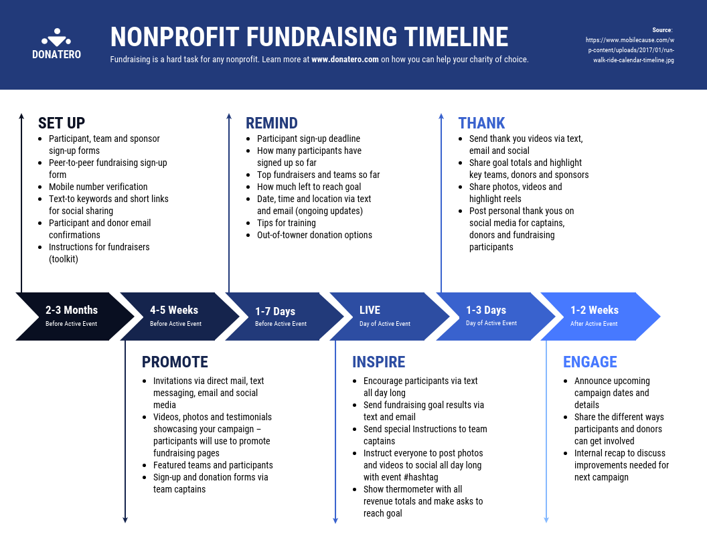

Timelines are a great way to show sequential information. However they can become clustered and hard to navigate when there is there is too much information and points. Using the Advanced timeline javascript library you can efficiently present timelines with lots of information in your web application! Don't forget to click on the 'Make your own Timeline' link at the bottom of the page to dynamically make your own timeline!
The image below is a timeline for an event fundraiser. Although there are not many detailed subpoints under each main point the timeline looks quite full. In the section below, this timeline has been converted to an advanced timeline. The timeline is now much easier to navigate and still has room for more detailed information such as images, audio, and more subpoints.
Back to Sample Timeline Make your own Timeline